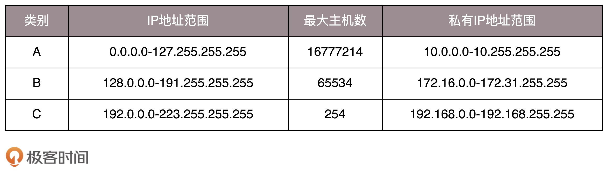

- 00 开篇词 想成为技术牛人？先搞定网络协议！.md.html
- 01 为什么要学习网络协议？.md.html
- 02 网络分层的真实含义是什么？.md.html
- 03 ifconfig：最熟悉又陌生的命令行.md.html
- 04 DHCP与PXE：IP是怎么来的，又是怎么没的？.md.html
- 05 从物理层到MAC层：如何在宿舍里自己组网玩联机游戏？.md.html
- 06 交换机与VLAN：办公室太复杂，我要回学校.md.html
- 07 ICMP与ping：投石问路的侦察兵.md.html
- 08 世界这么大，我想出网关：欧洲十国游与玄奘西行.md.html
- 09 路由协议：西出网关无故人，敢问路在何方.md.html
- 10 UDP协议：因性善而简单，难免碰到“城会玩”.md.html
- 11 TCP协议（上）：因性恶而复杂，先恶后善反轻松.md.html
- 12 TCP协议（下）：西行必定多妖孽，恒心智慧消磨难.md.html
- 13 套接字Socket：Talk is cheap, show me the code.md.html
- 14 HTTP协议：看个新闻原来这么麻烦.md.html
- 15 HTTPS协议：点外卖的过程原来这么复杂.md.html
- 16 流媒体协议：如何在直播里看到美女帅哥？.md.html
- 17 P2P协议：我下小电影，99%急死你.md.html
- 18 DNS协议：网络世界的地址簿.md.html
- 19 HttpDNS：网络世界的地址簿也会指错路.md.html
- 20 CDN：你去小卖部取过快递么？.md.html
- 21 数据中心：我是开发商，自己拿地盖别墅.md.html
- 22 VPN：朝中有人好做官.md.html
- 23 移动网络：去巴塞罗那，手机也上不了脸书.md.html
- 24 云中网络：自己拿地成本高，购买公寓更灵活.md.html
- 25 软件定义网络：共享基础设施的小区物业管理办法.md.html
- 26 云中的网络安全：虽然不是土豪，也需要基本安全和保障.md.html
- 27 云中的网络QoS：邻居疯狂下电影，我该怎么办？.md.html
- 28 云中网络的隔离GRE、VXLAN：虽然住一个小区，也要保护隐私.md.html
- 29 容器网络：来去自由的日子，不买公寓去合租.md.html
- 30 容器网络之Flannel：每人一亩三分地.md.html
- 31 容器网络之Calico：为高效说出善意的谎言.md.html
- 32 RPC协议综述：远在天边，近在眼前.md.html
- 33 基于XML的SOAP协议：不要说NBA，请说美国职业篮球联赛.md.html
- 34 基于JSON的RESTful接口协议：我不关心过程，请给我结果.md.html
- 35 二进制类RPC协议：还是叫NBA吧，总说全称多费劲.md.html
- 36 跨语言类RPC协议：交流之前，双方先来个专业术语表.md.html
- 37 知识串：用双十一的故事串起碎片的网络协议（上）.md.html
- 38 知识串：用双十一的故事串起碎片的网络协议（中）.md.html
- 39 知识串：用双十一的故事串起碎片的网络协议（下）.md.html
- 40 搭建一个网络实验环境：授人以鱼不如授人以渔.md.html
- 加餐1 创作故事：我是如何创作“趣谈网络协议”专栏的？.md.html
- 协议专栏特别福利 答疑解惑1期.md.html
- 协议专栏特别福利 答疑解惑2期.md.html
- 协议专栏特别福利 答疑解惑3期.md.html
- 协议专栏特别福利 答疑解惑4期.md.html
- 协议专栏特别福利 答疑解惑5期.md.html
- 结束语 放弃完美主义，执行力就是限时限量认真完成.md.html
- 捐赠
03 ifconfig：最熟悉又陌生的命令行
上一节结尾给你留的一个思考题是，你知道怎么查看IP地址吗？
当面试听到这个问题的时候，面试者常常会觉得走错了房间。我面试的是技术岗位啊，怎么问这么简单的问题？
的确，即便没有专业学过计算机的人，只要倒腾过电脑，重装过系统，大多也会知道这个问题的答案：在Windows上是ipconfig，在Linux上是ifconfig。
那你知道在Linux上还有什么其他命令可以查看IP地址吗？答案是ip addr。如果回答不上来这个问题，那你可能没怎么用过Linux。
那你知道ifconfig和ip addr的区别吗？这是一个有关net-tools和iproute2的“历史”故事，你刚来到第三节，暂时不用了解这么细，但这也是一个常考的知识点。
想象一下，你登录进入一个被裁剪过的非常小的Linux系统中，发现既没有ifconfig命令，也没有ip addr命令，你是不是感觉这个系统压根儿没法用？这个时候，你可以自行安装net-tools和iproute2这两个工具。当然，大多数时候这两个命令是系统自带的。
安装好后，我们来运行一下ip addr。不出意外，应该会输出下面的内容。
root@test:~# ip addr
1: lo: <LOOPBACK,UP,LOWER_UP> mtu 65536 qdisc noqueue state UNKNOWN group default
link/loopback 00:00:00:00:00:00 brd 00:00:00:00:00:00
inet 127.0.0.1/8 scope host lo
valid_lft forever preferred_lft forever
inet6 ::1/128 scope host
valid_lft forever preferred_lft forever
2: eth0: <BROADCAST,MULTICAST,UP,LOWER_UP> mtu 1500 qdisc pfifo_fast state UP group default qlen 1000
link/ether fa:16:3e:c7:79:75 brd ff:ff:ff:ff:ff:ff
inet 10.100.122.2/24 brd 10.100.122.255 scope global eth0
valid_lft forever preferred_lft forever
inet6 fe80::f816:3eff:fec7:7975/64 scope link
valid_lft forever preferred_lft forever
这个命令显示了这台机器上所有的网卡。大部分的网卡都会有一个IP地址，当然，这不是必须的。在后面的分享中，我们会遇到没有IP地址的情况。
IP地址是一个网卡在网络世界的通讯地址，相当于我们现实世界的门牌号码。既然是门牌号码，不能大家都一样，不然就会起冲突。比方说，假如大家都叫六单元1001号，那快递就找不到地方了。所以，有时候咱们的电脑弹出网络地址冲突，出现上不去网的情况，多半是IP地址冲突了。
如上输出的结果，10.100.122.2就是一个IP地址。这个地址被点分隔为四个部分，每个部分8个bit，所以IP地址总共是32位。这样产生的IP地址的数量很快就不够用了。因为当时设计IP地址的时候，哪知道今天会有这么多的计算机啊！因为不够用，于是就有了IPv6，也就是上面输出结果里面inet6 fe80::f816:3eff:fec7:7975/64。这个有128位，现在看来是够了，但是未来的事情谁知道呢？
本来32位的IP地址就不够，还被分成了5类。现在想想，当时分配地址的时候，真是太奢侈了。
在网络地址中，至少在当时设计的时候，对于A、B、 C类主要分两部分，前面一部分是网络号，后面一部分是主机号。这很好理解，大家都是六单元1001号，我是小区A的六单元1001号，而你是小区B的六单元1001号。
下面这个表格，详细地展示了A、B、C三类地址所能包含的主机的数量。在后文中，我也会多次借助这个表格来讲解。

这里面有个尴尬的事情，就是C类地址能包含的最大主机数量实在太少了，只有254个。当时设计的时候恐怕没想到，现在估计一个网吧都不够用吧。而B类地址能包含的最大主机数量又太多了。6万多台机器放在一个网络下面，一般的企业基本达不到这个规模，闲着的地址就是浪费。
无类型域间选路（CIDR）
于是有了一个折中的方式叫作无类型域间选路，简称CIDR。这种方式打破了原来设计的几类地址的做法，将32位的IP地址一分为二，前面是网络号，后面是主机号。从哪里分呢？你如果注意观察的话可以看到，10.100.122.2/24，这个IP地址中有一个斜杠，斜杠后面有个数字24。这种地址表示形式，就是CIDR。后面24的意思是，32位中，前24位是网络号，后8位是主机号。
伴随着CIDR存在的，一个是广播地址，10.100.122.255。如果发送这个地址，所有10.100.122网络里面的机器都可以收到。另一个是子网掩码，255.255.255.0。
将子网掩码和IP地址进行AND计算。前面三个255，转成二进制都是1。1和任何数值取AND，都是原来数值，因而前三个数不变，为10.100.122。后面一个0，转换成二进制是0，0和任何数值取AND，都是0，因而最后一个数变为0，合起来就是10.100.122.0。这就是网络号。将子网掩码和IP地址按位计算AND，就可得到网络号。
公有IP地址和私有IP地址
在日常的工作中，几乎不用划分A类、B类或者C类，所以时间长了，很多人就忘记了这个分类，而只记得CIDR。但是有一点还是要注意的，就是公有IP地址和私有IP地址。

我们继续看上面的表格。表格最右列是私有IP地址段。平时我们看到的数据中心里，办公室、家里或学校的IP地址，一般都是私有IP地址段。因为这些地址允许组织内部的IT人员自己管理、自己分配，而且可以重复。因此，你学校的某个私有IP地址段和我学校的可以是一样的。
这就像每个小区有自己的楼编号和门牌号，你们小区可以叫6栋，我们小区也叫6栋，没有任何问题。但是一旦出了小区，就需要使用公有IP地址。就像人民路888号，是国家统一分配的，不能两个小区都叫人民路888号。
公有IP地址有个组织统一分配，你需要去买。如果你搭建一个网站，给你学校的人使用，让你们学校的IT人员给你一个IP地址就行。但是假如你要做一个类似网易163这样的网站，就需要有公有IP地址，这样全世界的人才能访问。
表格中的192.168.0.x是最常用的私有IP地址。你家里有Wi-Fi，对应就会有一个IP地址。一般你家里地上网设备不会超过256个，所以/24基本就够了。有时候我们也能见到/16的CIDR，这两种是最常见的，也是最容易理解的。
不需要将十进制转换为二进制32位，就能明显看出192.168.0是网络号，后面是主机号。而整个网络里面的第一个地址192.168.0.1，往往就是你这个私有网络的出口地址。例如，你家里的电脑连接Wi-Fi，Wi-Fi路由器的地址就是192.168.0.1，而192.168.0.255就是广播地址。一旦发送这个地址，整个192.168.0网络里面的所有机器都能收到。
但是也不总都是这样的情况。因此，其他情况往往就会很难理解，还容易出错。
举例：一个容易“犯错”的CIDR
我们来看16.158.165.91/22这个CIDR。求一下这个网络的第一个地址、子网掩码和广播地址。
你要是上来就写16.158.165.1，那就大错特错了。
/22不是8的整数倍，不好办，只能先变成二进制来看。16.158的部分不会动，它占了前16位。中间的165，变为二进制为10100101。除了前面的16位，还剩6位。所以，这8位中前6位是网络号，16.158.<101001>，而<01>.91是机器号。
第一个地址是16.158.<101001><00>.1，即16.158.164.1。子网掩码是255.255.<111111><00>.0，即255.255.252.0。广播地址为16.158.<101001><11>.255，即16.158.167.255。
这五类地址中，还有一类D类是组播地址。使用这一类地址，属于某个组的机器都能收到。这有点类似在公司里面大家都加入了一个邮件组。发送邮件，加入这个组的都能收到。组播地址在后面讲述VXLAN协议的时候会提到。
讲了这么多，才讲了上面的输出结果中很小的一部分，是不是觉得原来并没有真的理解ip addr呢？我们接着来分析。
在IP地址的后面有个scope，对于eth0这张网卡来讲，是global，说明这张网卡是可以对外的，可以接收来自各个地方的包。对于lo来讲，是host，说明这张网卡仅仅可以供本机相互通信。
lo全称是loopback，又称环回接口，往往会被分配到127.0.0.1这个地址。这个地址用于本机通信，经过内核处理后直接返回，不会在任何网络中出现。
MAC地址
在IP地址的上一行是link/ether fa:16:3e:c7:79:75 brd ff:ff:ff:ff:ff:ff，这个被称为MAC地址，是一个网卡的物理地址，用十六进制，6个byte表示。
MAC地址是一个很容易让人“误解”的地址。因为MAC地址号称全局唯一，不会有两个网卡有相同的MAC地址，而且网卡自生产出来，就带着这个地址。很多人看到这里就会想，既然这样，整个互联网的通信，全部用MAC地址好了，只要知道了对方的MAC地址，就可以把信息传过去。
这样当然是不行的。 一个网络包要从一个地方传到另一个地方，除了要有确定的地址，还需要有定位功能。 而有门牌号码属性的IP地址，才是有远程定位功能的。
例如，你去杭州市网商路599号B楼6层找刘超，你在路上问路，可能被问的人不知道B楼是哪个，但是可以给你指网商路怎么去。但是如果你问一个人，你知道这个身份证号的人在哪里吗？可想而知，没有人知道。
MAC地址更像是身份证，是一个唯一的标识。它的唯一性设计是为了组网的时候，不同的网卡放在一个网络里面的时候，可以不用担心冲突。从硬件角度，保证不同的网卡有不同的标识。
MAC地址是有一定定位功能的，只不过范围非常有限。你可以根据IP地址，找到杭州市网商路599号B楼6层，但是依然找不到我，你就可以靠吼了，大声喊身份证XXXX的是哪位？我听到了，我就会站起来说，是我啊。但是如果你在上海，到处喊身份证XXXX的是哪位，我不在现场，当然不会回答，因为我在杭州不在上海。
所以，MAC地址的通信范围比较小，局限在一个子网里面。例如，从192.168.0.2/24访问192.168.0.3/24是可以用MAC地址的。一旦跨子网，即从192.168.0.2/24到192.168.1.2/24，MAC地址就不行了，需要IP地址起作用了。
网络设备的状态标识
解析完了MAC地址，我们再来看
UP表示网卡处于启动的状态；BROADCAST表示这个网卡有广播地址，可以发送广播包；MULTICAST表示网卡可以发送多播包；LOWER_UP表示L1是启动的，也即网线插着呢。MTU1500是指什么意思呢？是哪一层的概念呢？最大传输单元MTU为1500，这是以太网的默认值。
上一节，我们讲过网络包是层层封装的。MTU是二层MAC层的概念。MAC层有MAC的头，以太网规定正文部分不允许超过1500个字节。正文里面有IP的头、TCP的头、HTTP的头。如果放不下，就需要分片来传输。
qdisc pfifo_fast是什么意思呢？qdisc全称是queueing discipline，中文叫排队规则。内核如果需要通过某个网络接口发送数据包，它都需要按照为这个接口配置的qdisc（排队规则）把数据包加入队列。
最简单的qdisc是pfifo，它不对进入的数据包做任何的处理，数据包采用先入先出的方式通过队列。pfifo_fast稍微复杂一些，它的队列包括三个波段（band）。在每个波段里面，使用先进先出规则。
三个波段（band）的优先级也不相同。band 0的优先级最高，band 2的最低。如果band 0里面有数据包，系统就不会处理band 1里面的数据包，band 1和band 2之间也是一样。
数据包是按照服务类型（Type of Service，TOS）被分配到三个波段（band）里面的。TOS是IP头里面的一个字段，代表了当前的包是高优先级的，还是低优先级的。
队列是个好东西，后面我们讲云计算中的网络的时候，会有很多用户共享一个网络出口的情况，这个时候如何排队，每个队列有多粗，队列处理速度应该怎么提升，我都会详细为你讲解。
小结
怎么样，看起来很简单的一个命令，里面学问很大吧？通过这一节，希望你能记住以下的知识点，后面都能用得上：
IP是地址，有定位功能；MAC是身份证，无定位功能；
CIDR可以用来判断是不是本地人；
IP分公有的IP和私有的IP。后面的章节中我会谈到“出国门”，就与这个有关。
最后，给你留两个思考题。
- 你知道net-tools和iproute2的“历史”故事吗？
- 这一节讲的是如何查看IP地址，那你知道IP地址是怎么来的吗？
欢迎你留言和我讨论。趣谈网络协议，我们下期见！
© 2019 - 2023 Liangliang Lee. Powered by gin and hexo-theme-book.